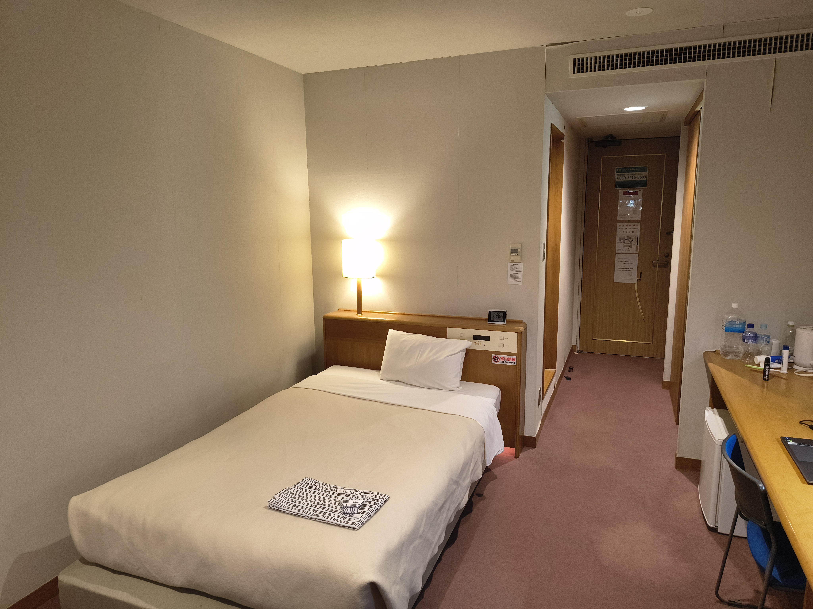
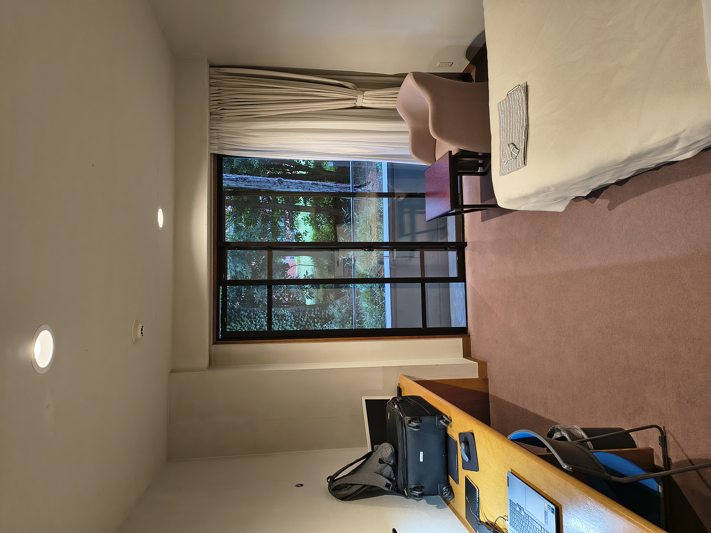
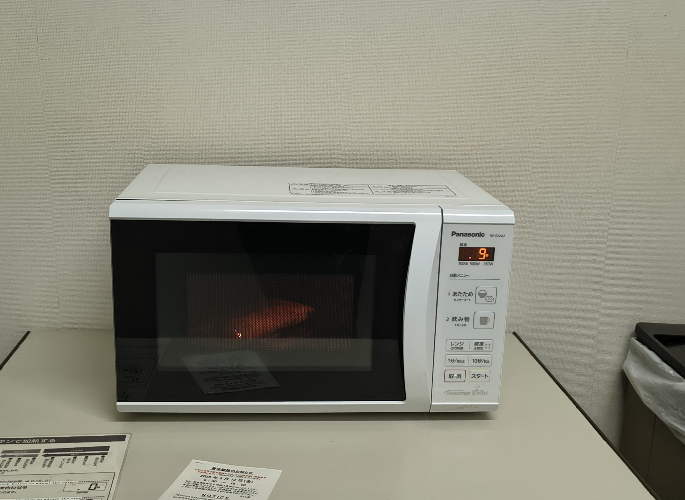
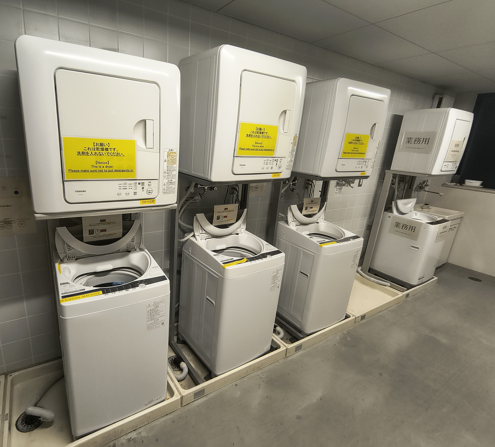
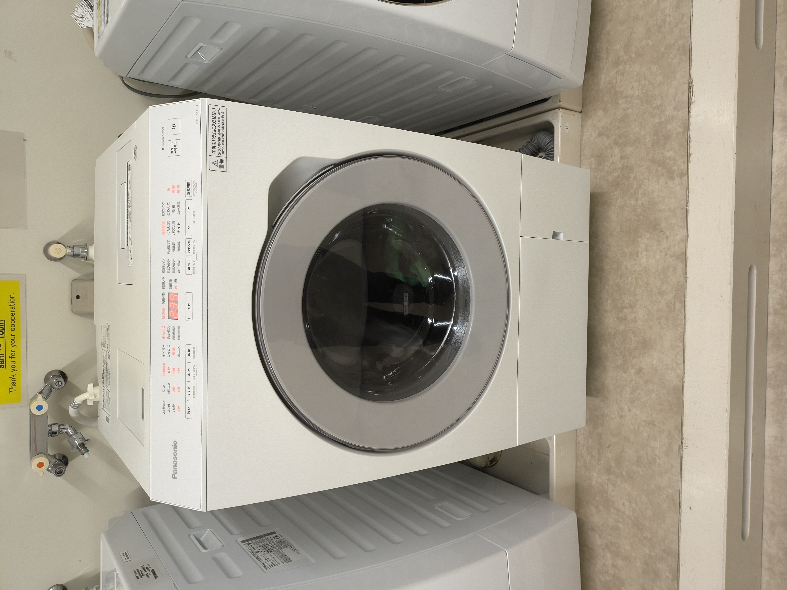
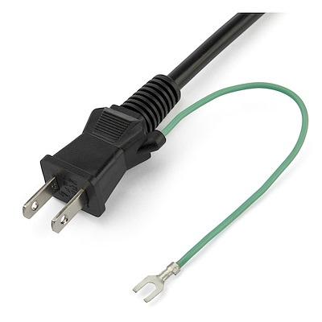
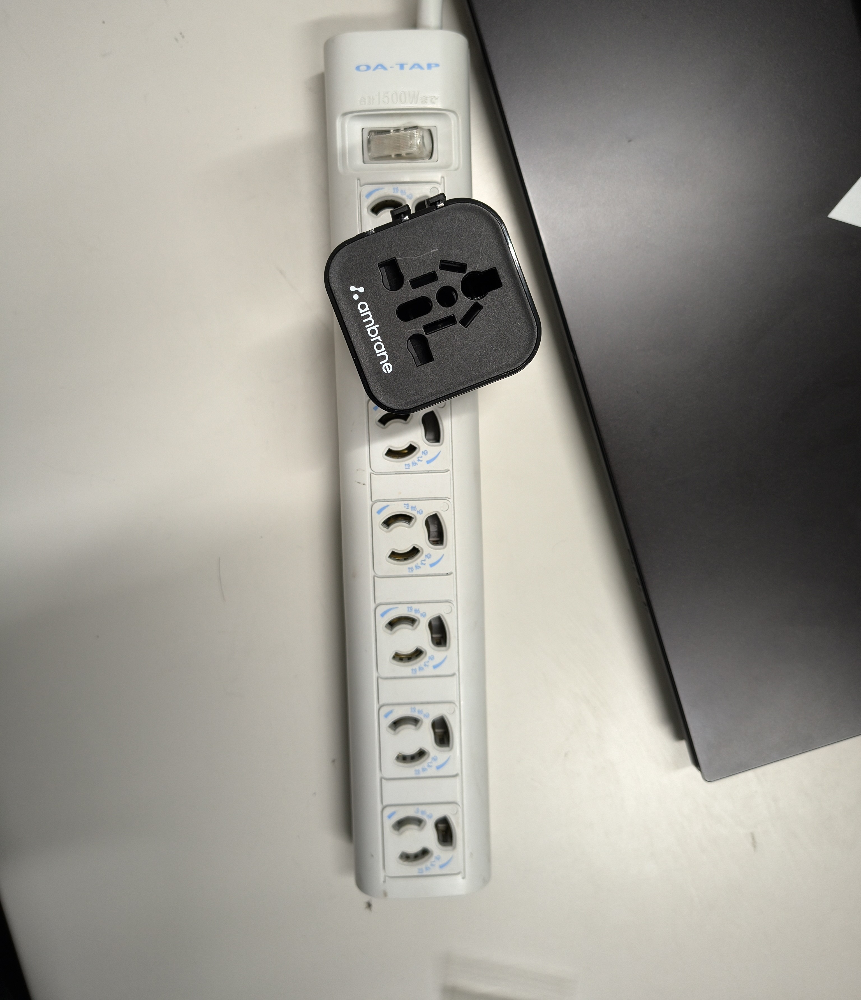

Living at Sakura-kan

The Overview
AIST houses its visiting researchers and interns in one of two on-site buildings:
- Sakura-kan, for anyone staying under 90 days
- Keyaki-kan, for longer-term stays
This page sticks to Sakura-kan, since that's where my own experience lies. I can't speak to Keyaki-kan at all.
Think of Sakura-kan less as a hotel and more as a self-serve residence. There's front-desk support for the essentials, but don't expect room service or a concierge. What you do get is a private, well-kept room and a set of shared facilities that cover everything a short stay actually needs.
Rooms on Offer
| Room type | Suited to | What's included |
|---|---|---|
| Single | One person | Bed, desk, TV, phone, private bathroom |
| Twin | Two people | Same setup as a single |
| Family | Families or longer stays | Extra living space, a compact kitchen, and up to two additional beds on request |
Regardless of room type, expect:
- A private bathroom
- A desk to work at
- A TV with a handful of local channels
- A telephone that handles both internal and external calls (external calls are billed)
- A wired LAN port for internet
Wake-up calls
The room's instruction manual has a specific dial combination for the landline that sets an automated wake-up call at your chosen time.





Getting Online
The single most useful thing to know before you arrive
WiFi only reaches shared lobby spaces and individual rooms in Block A. Rooms in Blocks B and C are not covered. Every block does have a LAN port instead, and reception can lend you a cable if you didn't bring one.
On mobile data: I used the SoftBank network, but don't count on a strong signal once you're indoors. Speeds can drop to almost nothing inside the building. If you need a reliable connection, standing near a window or out on a balcony makes a real difference.
Cooking & Meals
-
Family rooms
Come with their own mini kitchen.
-
Everyone else
Shares a common kitchen stocked with a microwave and a few other basics.
-
Cookware
Free to borrow once you've registered at the desk.
-
Not cooking?
The AIST cafeteria runs lunch and dinner on weekdays. Convenience stores and restaurants nearby cover anything else.
There's a separate spot for washing and drying dishes and utensils after cooking.


Doing Laundry
Every block has washing machines, and they're free to use. That said, detergent isn't supplied. Any nearby convenience store sells it.
| Block | Setup |
|---|---|
| A | Combined washer-dryer units that run automatically |
| B | Washer and dryer kept as separate machines |
| C | Washing units are available, though I haven't used them myself |


Bikes & Moving Around
Free bicycle loans are one of the best perks here. They make commuting and exploring Tsukuba far easier.


How borrowing works
Sign the logbook at reception to borrow a bike. The same rule applies to anything else you borrow, including umbrellas, irons, and LAN cables: you can only pick these up after making an entry in the respective logbook at the desk.
Around the Building
-
Vending machines
Drinks plus snacks like chips and buns, available in Blocks A and B.
-
Lounge
A shared TV area to hang out.
-
Nursery
An on-site nursery with a small attached playground is available.
Room Upkeep
Housekeeping comes through twice a week (for me, it was Mondays and Thursdays). They'll make up the bed with fresh linens, swap towels, and tidy the room.
Checking In and Out
- Anything you want to borrow, be it a bike, umbrella, LAN cable, or iron, only becomes available once your check-in and logbook entry are done.
- Don't forget: your room key has to be handed back at the front desk when you leave.
Final Thoughts
Sakura-kan works well for a short research stay. The rooms are private and clean, the shared amenities (kitchen, laundry, bikes) genuinely cut down on daily hassle, and the staff at the desk were kind and helpful. Two things worth planning around ahead of time: WiFi is Block-A-only, and mobile signal indoors is weak. Beyond that, it's a low-stress place to spend an internship.
Something peculiar
In Japan, most appliances have an optional ground wire, since most buildings aren't wired for grounding. Also, some extension cords have a built-in locking mechanism: you insert the plug and twist to lock it, then twist it back before removing the plug.

